Using more Data
Learning objectives
This lesson focuses on learning more about the different types of geographic data available in ArcGIS Online and learning how to import and work with your own data. At the end of this workshop you will:
- Have a better understanding of the vector and raster geospatial data types
- Know how to import your own data into ArcGIS Online
- Know how to edit or add data to a feature layer
- Know how to do computation on raster
- Know how to export data from ArcGIS Online to your local machine
Review: Annotations vs. Data
In Workshop 1, we started with sketch layers to draw points, lines, and polygons directly on top of the map. While sketches are convenient for quick markups and annotations, they are not true GIS data layers. Sketches lack an underlying database table and cannot be queried, filtered, or used in spatial analysis.
In contrast, feature layers link geometries (points, lines, or polygons) to structured records in an attribute table. Each feature has defined attributes, or fields (e.g., name, speed limit, road type, elevation) with specific data types (such as text strings, numbers, and dates). This tabular structure makes it possible to filter features, symbolize data based on its attributes, and calculate spatial relationships.
Exercise: Workshop 1 Recap
- Open and explore the completed map from Workshop 1 (
Workshop campus bike map). - Review layer symbology and experiment with the style sliders (such as Counts & Amounts).
- Review how points, lines, and polygons are different
- Refresh memory on building layer
- Perform a Save As before moving forward so that you have your own working map copy saved in your personal ArcGIS Online workspace.
Preview: our end goal
Our finished product for this session will be the Workshop Goleta bike map. We will take time to preview this finished map before building it step by step.
** link and screenshot of finished map goes here. Work in progress version: (https://arcg.is/1yz0KP3)
Geographic data
Geographic data generally falls into two primary models: vector and raster.
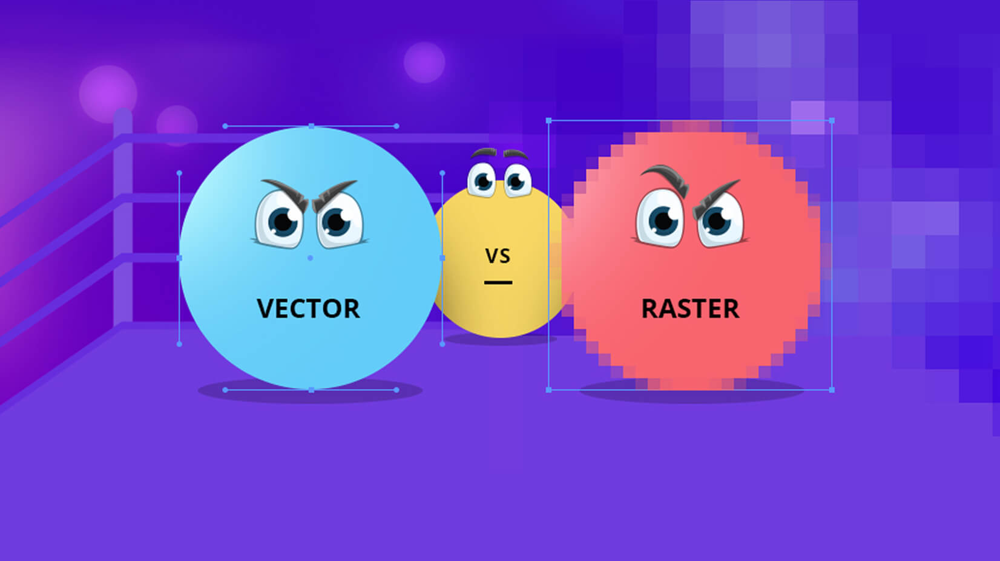
Vector Data
So far we have only looked at vector data. Vector data represents discrete geographic features using coordinate geometry:
- Points: Single \((X, Y)\) coordinate pairs representing discrete locations (e.g., bike racks, bus stops, accident locations).
- Lines (Polylines): Ordered sequences of vertices connecting locations to represent linear features or networks (e.g., bike paths, roads, transit routes, streams).
- Polygons: Closed shapes enclosing an area defined by connected coordinate vertices (e.g., campus buildings, land parcels, parks, water bodies).
Every shape is tied to a row in an attribute table, where each column holds specific properties describing that feature. For example …
Raster Data
Raster data represents the landscape as a regular grid of square cells (pixels) organized into rows and columns.
- Single-band rasters: Each pixel contains a single numerical value representing a continuous measurement (such as elevation in a Digital Elevation Model [DEM], slope, or temperature) or an integer code representing a category (such as land cover types).
- Multi-band rasters: Each pixel contains multiple values across different spectral channels or bands (such as red, green, blue, and near-infrared bands in aerial photography or satellite imagery).
The Story So Far
In the first workshop, we created a bicycle map of campus and Isla Vista using pre-existing data.
Our goal for part 2 is to plan a challenging and comfortable bicycle route that leads from the UCSB campus into the surrounding Goleta community and the Santa Ynez foothills. To accomplish this, we need to expand beyond campus bike paths and incorporate regional road networks along with elevation data to analyze terrain and slope.
Adding New Material to Your Map
Let’s set up our workspaces together. The layers for this workshop all have a wider extent than those from Workshop 1. For example, SantaBarbara_Merged_roads** is an expanded street and bicycle path network covering the Goleta and Santa Barbara area, extracted from OpenStreetMap and an Esri Living Atlas layer. We have already excluded major highways from this layer–because we know you won’t want to bicycle on them.
Add this layer now.
To examine routes beyond campus, we zoom out to the broader regional area:
- Start with your freshly saved copy of the map in your personal workspace.
- Add the
SantaBarbara_Merged_roadslayer from your organization or the workshop group. - Open the attribute table to inspect fields such as highway classification, road surface, and speed limits, and symbolize the roads to distinguish bike-friendly streets from arterial highways.
- TO DO *
- screenshot of map with roads symbolized for bikes
Compare the previous road file to this one
Which vector layers in the map are: –points –lines –polygons
Keeping a clean workspace
let’s not forget to remove old layers from the current map (ie: the old roads roads)
Working with Raster Data
When outside of ArcGIS Online, geospatial raster data comes in many different forms. TIFFs, Grids, netCDF, iiif, web map services. Too many to list!
- ArcGIS Online variations: while these all start somewhere as TIFFs, they are all (generally?) ingested into AGO as
Tiled imagery layers
Digital Elevation Models (DEM)
Let’s add a Digital Elevation Model to out map: ucsb_local_dem. By default, a single channel or one band raster is displayed as grayscale, with low values black and high values white.
The value of each pixel in a DEM represents elevation. What do you think are the units of ucsb_local_dem?
** do we need a screenshot of the DEM as it comes in by default? **
Each pixel, or cell, in our DEM represents bare-earth surface elevation relative to a vertical datum (mean sea level). The ucsb_local_dem dataset was derived from a high-resolution USGS LiDAR survey (3D Elevation Program (3DEP)).
** define continuous **
In the layer properties, explore the raster statistics: note the minimum elevation near sea level (0) along the coast and slough, rising to hundreds of feet in the foothills, as well as the grid cell resolution. (make sure we are feet and not meters)
Does our DEM contain negative values? Why?
Applying Color Schemes
By default, continuous raster layers display using a grayscale “Stretch” renderer (low values dark, high values light). To clearly distinguish elevation changes across the coastal plain and mountains, let’s change the symbology to a continuous or diverging color ramp (e.g., a below-and-above zero diverging ramp or an elevation palette).
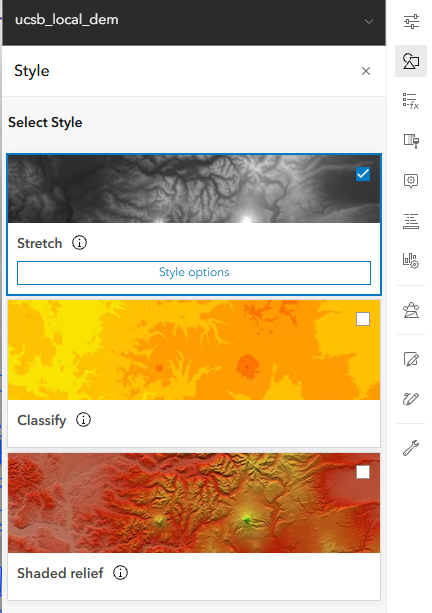
- insert screenshot of results of divergent DEM
Categorical Rasters
Categorical vs. Continuous Data
Continuous data are best represented by numbers, and are logically consistent when you do so. Smaller numbers = less of some measurement.
On the other hand, categorical data can be text or numeric. The value of any numbers used do not necessarily reflect any mathematical value, but it may. For example, while the values below have a natural order (3 Little Piggies Construction Scale), the numbers are ordinal, but arbitrary:
1 = reinforced concrete or steel beam
2 = wood stick construction
3 = baked brick masonry
4 = adobe
5 = sun brick / mud daub
6 = straw bail
While elevation is a continuous raster (values change smoothly along a numerical gradient), other rasters are categorical rasters (e.g., land cover classification datasets from the Living Atlas, where integer cell values represent categories such as urban development, forest, or water).
One particularly arbitrary type of categorical data is land cover. -
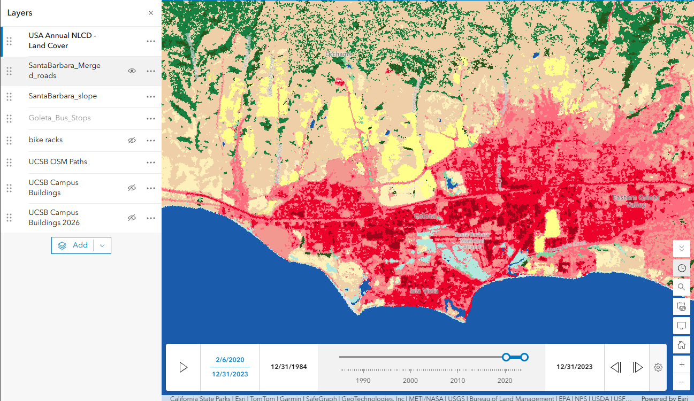
Calculated Raster Data: Slope
When we made the hillshade visualization above, that was a sort of calculation based on the DEM.
You can also perform calculations to turn a DEM into a slope layer. We made this slope layer for you. This is another continuous dataset. You can call it derivative data.
We will learn how it was made in workshop 3, but for now we will use it to examine, with our eyes, where the steepest bike routes up into our foothills are:
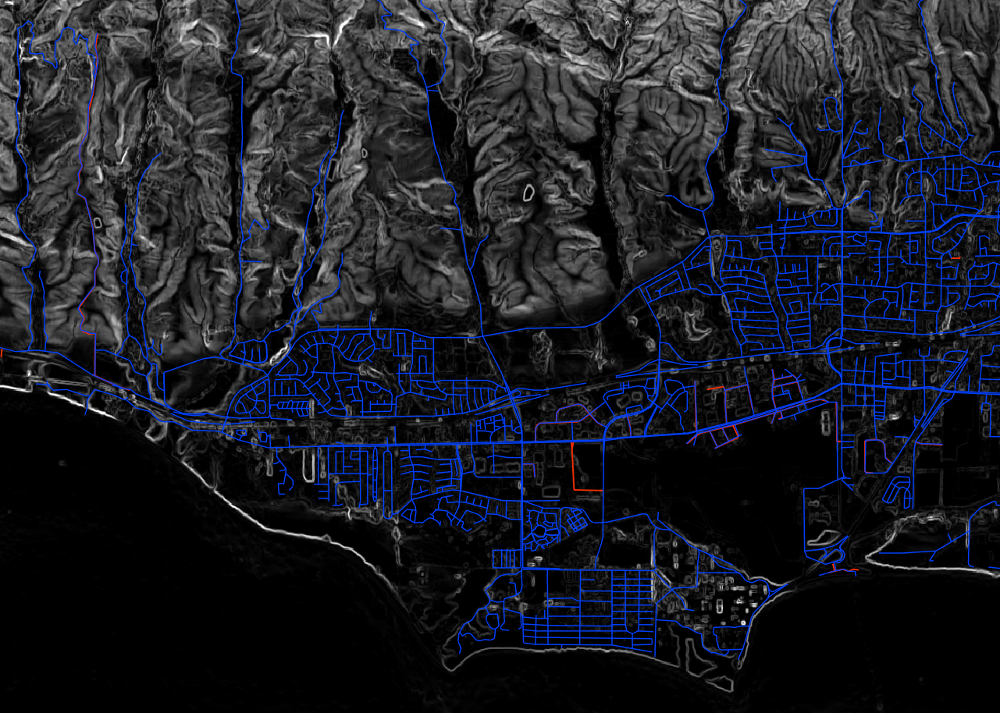
POP QUIZ: Below same slope layer, zoomed in to campus, and symbolized with a divergent color scheme. What does this tell you is incorrect about something we said earlier regarding our DEM?
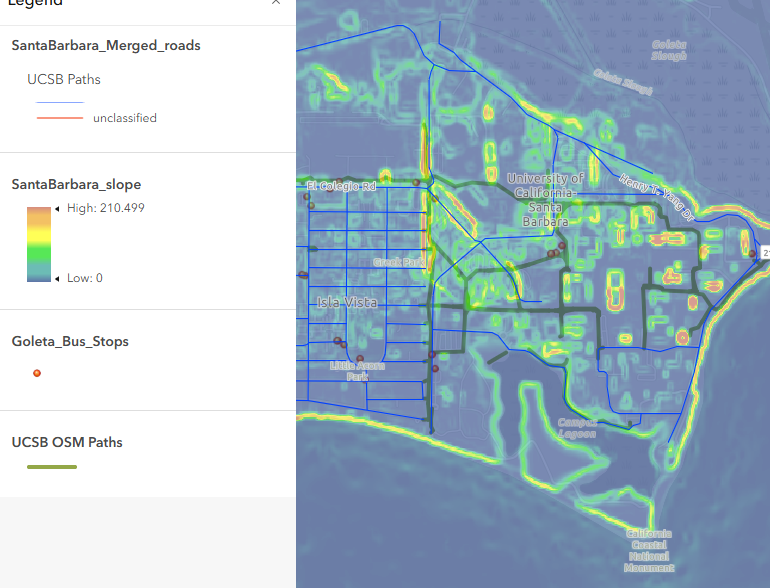
Resymbolize your slope layer to a color scheme that makes sense to you. Look up into the foothills. Which paths look steepest?
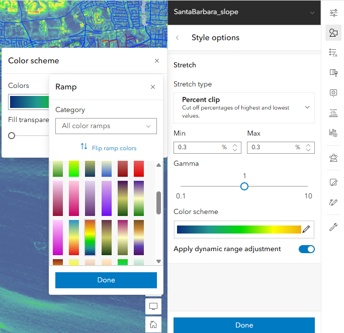
Layer Management, Rasters, and Additional Vectors
Add in the bus stop layer
Re-order layers: Ensure vector layers (roads and paths) remain on top of the raster elevation layers in the layer stack so they are not hidden.
Imagery Layers vs. Basemaps:
- An basemap sits at the bottom of the map canvas, serving purely as a static background context. Esri has options that are satellite and aerial views.
- An imagery layer is a data layer added to your map stack. It can be re-ordered above or below other layers, adjusted with transparency and blend modes, queried for pixel values, and analyze for groundcover characteristics.
- Below we will add a Planet satellite view to campus to explore.
- All ArcGIS Online accounts created under the UCSB site license are allocated 1000 service credits per license year.
- Transactions: Some analysis operations and storage consume service credits. For more information, visit Esri’s Understand Credits page.
- Manage your content: Periodically review and delete unnecessary hosted layers and analysis outputs to conserve credits.
- Data Stewardship: Objects stored in ArcGIS Online should be considered ephemeral. Your content access depends on the UCSB Library’s Higher Education Site License.
Multi-band Rasters
So far we have worked with single-channel, or 1-band rasters. However, perhaps we are more familiar with 3-channel images, because our eyes see best in the red-green-blue color space. For geospatial data, think of this as satellite or aerial views.
For digital images, 3 ‘bands’ of wavelengths are stored separately. When the computer combines them together, we humans see something akin to what we see when we look at nature with our eyes. However, we can swap in other bandwidths of radiation, such as near infrared, or microwave, and see completely other things.
The DREAM Lab hosts several satellite views of campus created by a private satellite firm. Let’s add one of those layers now:
- placeholder for Planet image of Goleta
Importing data into ArcGIS Online
Uploading a raster image to ArcGIS Online takes up storage, so we aren’t going to do that. However we can also add vector and tabular data to our map!
Creating Vector Layers from .CSV files
In this section we will import SantaBarbara_County_Trailheads.csv from a CSV spreadsheet using coordinate columns (latitude and longitude) to see how external tabular data can be transformed into a geospatial layer and integrate with existing road and elevation layers.
Download and open the SantaBarbara_County_Trailheads.csv onto your device.
- What are the attributes stored in this dataset?
- Which attributes are storing the geospatial information?
- What is the quality of this dataset? Anything suspect?
CSV import wizard
- Add layer from file
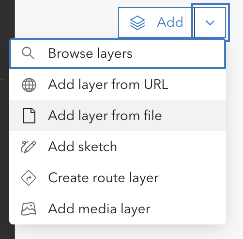
- Select “Your Device” and browse to the csv file you want to import
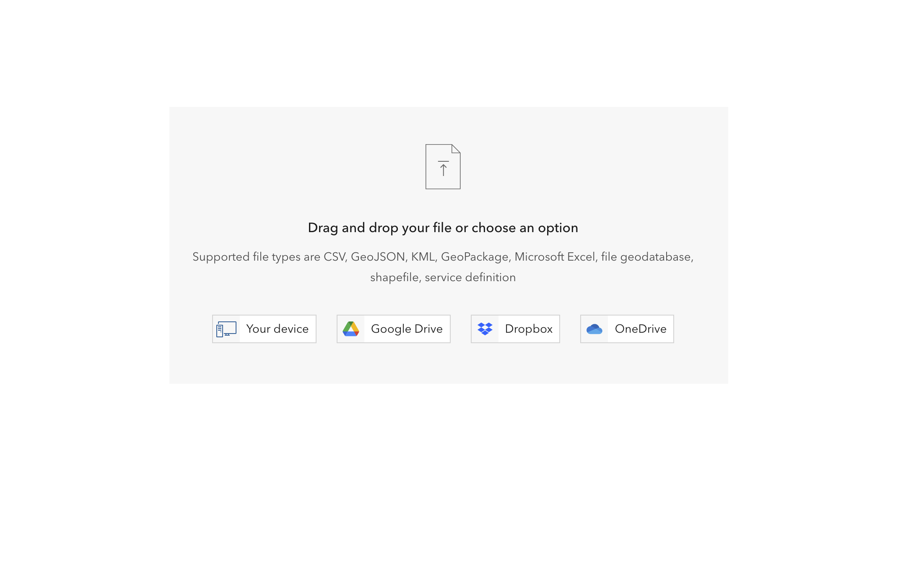
- Leave the default option “Create a hosted feature layer and add it to the map” and click Next
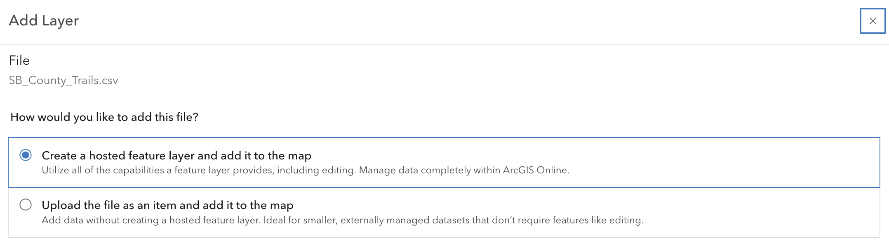
- Select the attributes you would like to import as well as rename fields as you see necessary. You can also use this step to rename any of the field. Let’s select all the fields up to “Overview” and Rename “Title” as “Name”. It is also a good practice to check that the field types are aligned with what you were expecting.
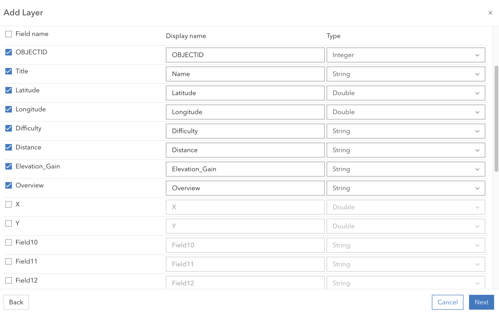
- Match the latitude and longitude information used by ArcGIS to generate the location with your data attributes.
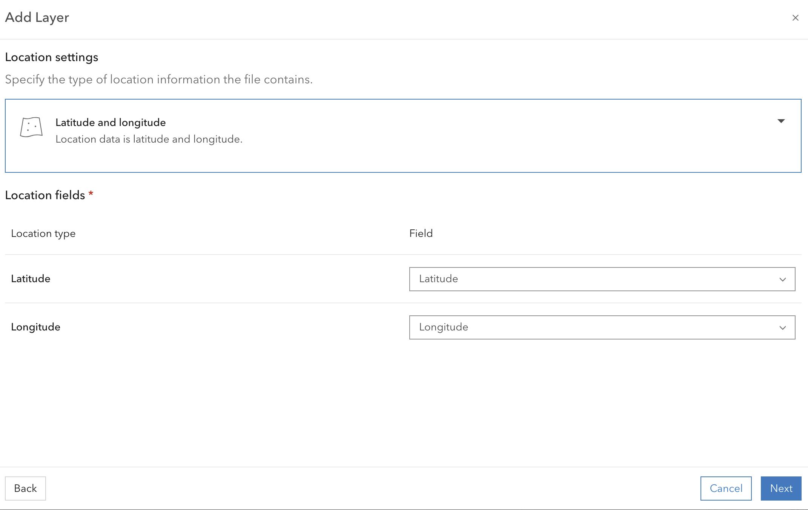
- Save your new data layer under your user account creating a
ucsb_bikefolder if you have not one yet
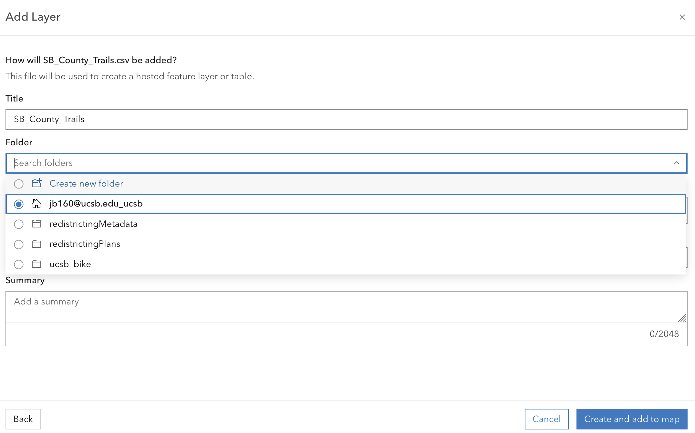
- Zoom out to see the trailhead locations! Of course now we need to make it look better :)
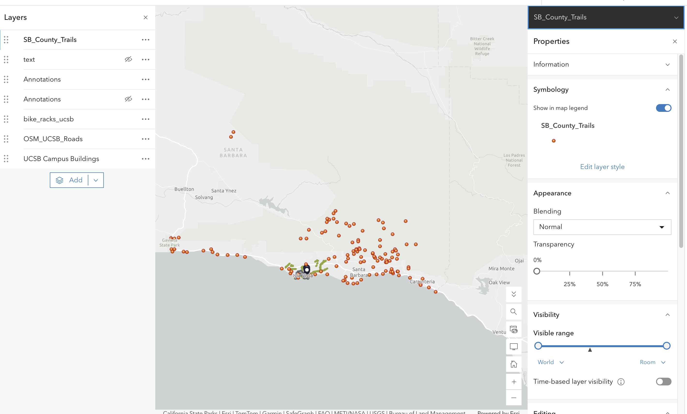
A note on Coordinate Reference Systems
In ArcGIS Online, the default projection and Coordinate Reference System (CRS) is WGS 1984 Web Mercator Auxilary Sphere, also used by the Global Positioning System (GPS).
Coordinate systems can be divided into two main categories: Projected and Geographic Coordinate Systems.
Projected Coordinate Systems use a 2D flat surface to define locations and is measured in linear units. Locations are identified by x,y coordinates
Geographic Coordinate Systems use a 3D spherical surface measured in angular units to define locations on earth. A point is referred by its latitude and longitude.
There are pletor of CRSs that all have different accuracy and other advantages depending on your location and extenst of your area of interest. Here is a good website to look at the different CRSs: https://epsg.io/
Examine the csv file: does it tell you anything about the coordinate system that we are dealing with?
- Choose the trail
Difficultyattribute to add a color ramp - Give a title to the legend
- Reorder the fields so their are matching the difficulty order (and not the alphabetical one)
- Choose a good color ramp
- Increase the point size
Editing Data
Potential narrative: adding the new ILP bike path to your own personal bike path layer.
Exporting Data
At some point in your analysis, you might want to also download the data in addition to your map, for example, to move to a scripted environment such as R and Python to conduct statistical analysis. This is a multi-step process: first, you will have to export the feature layer in a downloadable format; then you will be able to download this layer to your local computer.
You can not export a layer from the Map Viewer, you will need to first return to the “My Content” view. You can do this by using the “Burger” menu at the top-left of your Map view and selecting Content.
- Once in the My content view, locate and click on the spatial trailhead layer you imported from the CSV file to go to the Overview page of that layer.
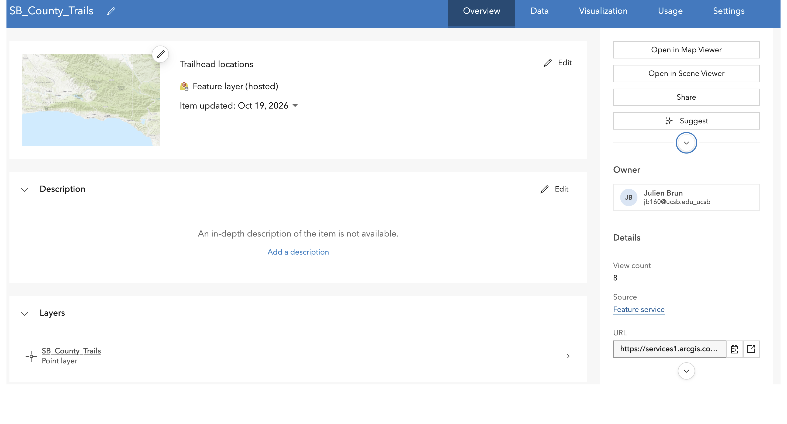
- Unfold the menu on the right completely, select Export data, and choose the GeoJSON format.
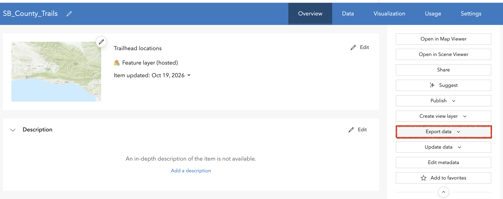
- On the next window, leave the default options and choose your ucsb_bike folder as location. Click on Export. Note that exporting data can take some time, so be patient :)
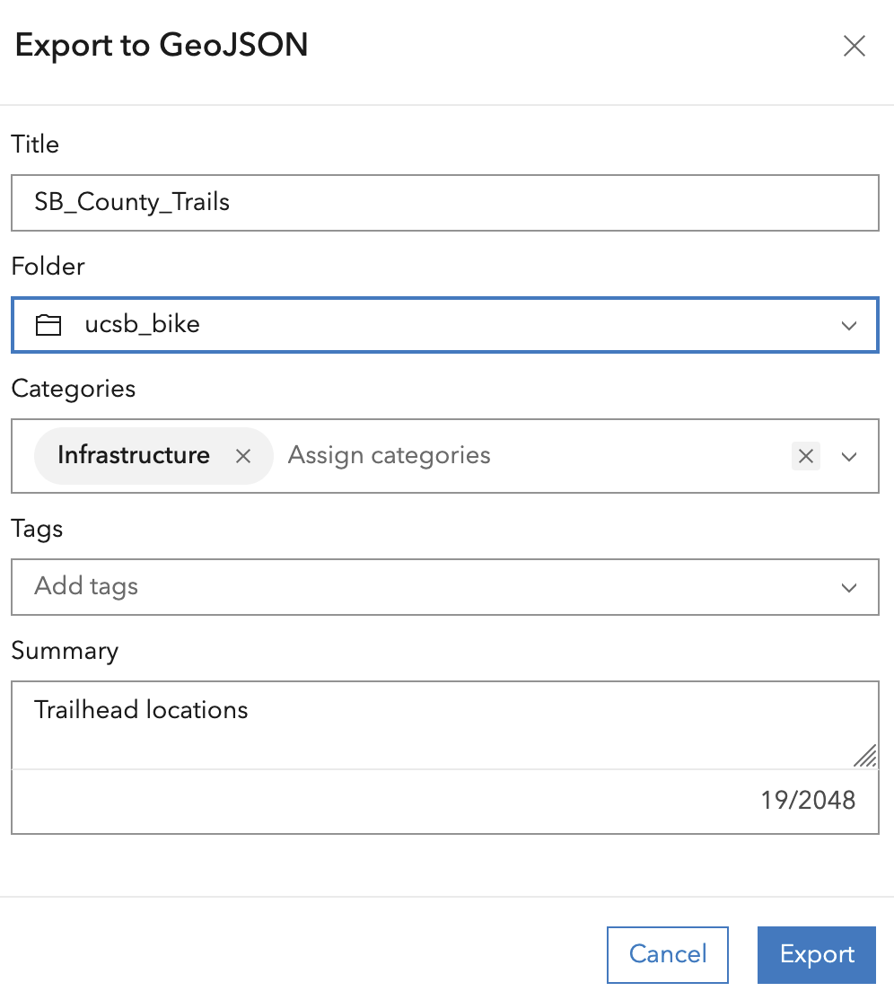
- Once the export is completed, you should automatically be redirected to the Overview page of this new dataset. This time, Download should be available in the menu on the right side of the page. Click on it and select a location on your local computer and a filename.
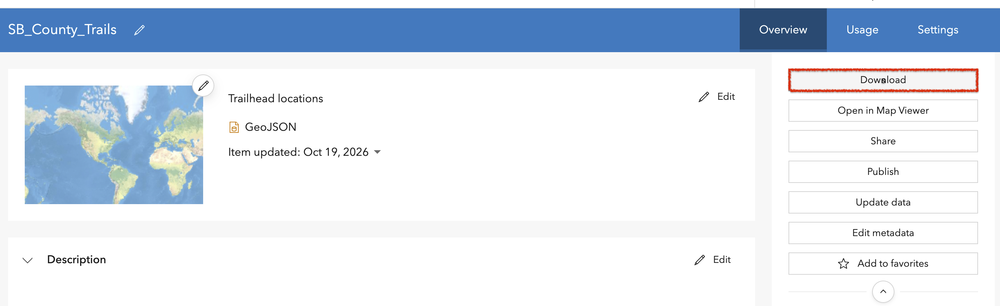
see also: the token economy <= Call-out box?
Completing the Story
So where shall we ride our bicycles?
How to improve your map
Creating Shaded Relief (Hillshade) on the Fly
One use for a DEM is to make a shaded relief layer. That is a classic view that gives the terrain realistic three-dimensional depth and surface texture, we can generate a shaded relief visualization dynamically:
- Duplicate the
ucsb_local_demlayer. - Rename the two DEM layers for clarity: name the top layer
Elevation (Color)and the bottom layerElevation (Shaded Relief). - Change the symbology style to Shaded Relief.
Shaded relief simulates how sunlight illuminates terrain, casting shadows based on the position of the sun measured as two angles: Azimuth and Altitude
- Azimuth: The compass direction from which the illumination source (the sun) originates, measured in degrees clockwise from north (0° = North, 90° = East, 180° = South, 270° = West). In cartography, the sun is traditionally positioned in the northwest (315°) or west (270°) to match how the human brain interprets light and shadow, preventing an optical illusion known as “relief inversion” where mountains appear as valleys. For our map, we position the light source from the west.
- Altitude: The angle of the sun above the horizon, measured from 0° (level with the horizon at sunrise/sunset) to 90° (directly overhead at solar noon). A lower altitude (e.g., 30°–45°, typical of low winter sun) produces longer, more dramatic shadows that accentuate ridgelines, canyons, and valleys.
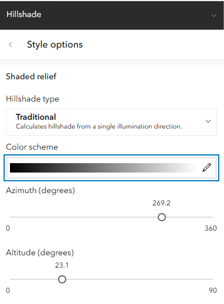
We can adjust those angles to show the sun in the morning or evening here in Santa Barbara.
Adjust the transparency of the top colored elevation layer so the shaded relief beneath shows through, creating an illuminated 3D terrain effect under our roads.
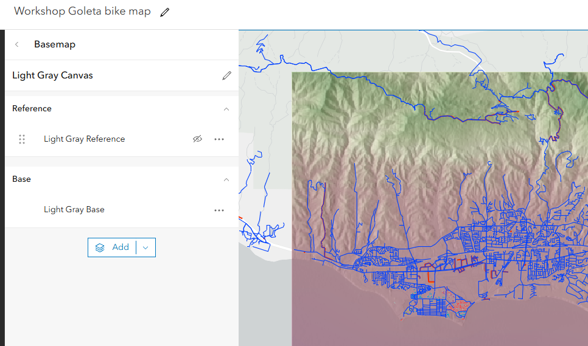
This matches interim map 3 in our group.
This is a bit of an artificial example, because Esri offers a wide variety of hillshade basemaps in the Living Atlas. Also: that was a rather lengthy aside.
Now would be an excellent point to save your map.
Preview for Workshop 3: Looking Ahead to Spatial Analysis
In Workshop 3, we dive deeper into quantitative spatial analysis. The data layers we prepared today form the foundation for analyzing terrain and route difficulty:
- Calculate slope from the DEM (a single-channel continuous raster measuring steepness)
- Overlay slope values onto road segments
- Identify and highlight the steepest climbs (maximum slope)Analysis Workflow Overview
- Slope Calculation: Use raster analysis tools to calculate a slope raster from the DEM, expressing terrain steepness in degrees or percent rise.
- Zonal Statistics as Table: With the slope raster and the road network loaded, run Raster Analysis > Zonal Statistics as Table to compute summary statistics (such as the maximum or mean slope) for each road line.
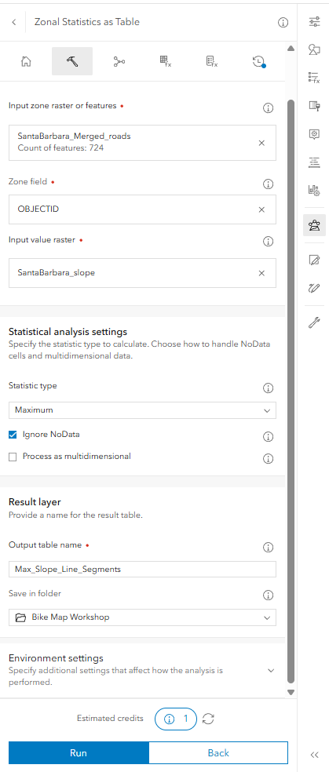
- Joining Statistics to Roads: The zonal statistics tool outputs a standalone data table. To visualize these slope measurements on the map, join the table back to the road vector layer using Tools > Summarize data > Join Features, matching on a common identifier such as
OBJECTID.
- Once joined, roads can be symbolized by slope steepness, allowing us to pinpoint the steepest hill climbs for our ride!